Box Cox transformation¶
 a
multivariate stochastic process of dimension
a
multivariate stochastic process of dimension  where
where
 and
and  is an event. We
suppose that the process is
is an event. We
suppose that the process is 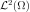
. the random
variable at the vertex
the random
variable at the vertex  defined by
defined by
 .
.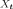
depends on the vertex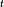
, the Box Cox transformation maps the process into the process
into the process  such that the variance of
such that the variance of
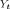
is constant (at the first order at least) with respect to .the estimation of the Box Cox transformation from a given field of the process
,the action of the Box Cox transformation on a field generated from
.
 the Box Cox
transformation which maps the process into the process
the Box Cox
transformation which maps the process into the process
 , where
, where
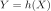
, such that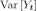
is independent of at the first order.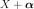
. in the
scalar case (=1), using the Taylor development of
in the
scalar case (=1), using the Taylor development of
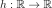
at the mean point of . around
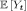
writes:
which leads to:

and then:

To have constant with respect to at the first order, we need:
(1)¶
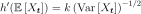
Now, we make some additional hypotheses on the relation between
 and
and  :
:
If we suppose that
 , then
(1) leads to the function
, then
(1) leads to the function  and we
take
and we
take 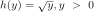
;If we suppose that
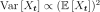
, then (1) leads to the function and we
take
and we
take  ;
;More generally, if we suppose that
 ,
then (1) leads to the function
,
then (1) leads to the function 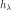
parametrized by the scalar :
:
(2)¶
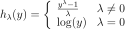
where
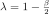
.The inverse Box Cox transformation is defined by:
(3)¶
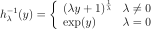
is estimated from a given field of the
process as follows. given below is optimized in the case
when  at
each vertex . If it is not the case, that estimation
can be considered as a proposition, with no guarantee.
at
each vertex . If it is not the case, that estimation
can be considered as a proposition, with no guarantee. are then estimated by
the maximum likelihood estimators. We note
and
respectively the cumulative distribution function and the density
probability function of the
are then estimated by
the maximum likelihood estimators. We note
and
respectively the cumulative distribution function and the density
probability function of the  distribution.
distribution.(4)¶

from which we derive the density probability function  of
for all vertices :
of
for all vertices :
(5)¶
Using (5), the likelihood of the values
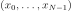
with respect to the model (4) writes:(6)¶![L(\beta,\sigma,\lambda) =
\underbrace{ \frac{1}{(2\pi)^{N/2}}
\times
\frac{1}{(\sigma^2)^{N/2}}
\times
\exp\left[
-\frac{1}{2\sigma^2}
\sum_{k=0}^{N-1}
\left(
h_\lambda(x_k)-\beta
\right)^2
\right]
}_{\Psi(\beta, \sigma)}
\times
\prod_{k=0}^{N-1} x_k^{\lambda - 1}](../../_images/math/04bde8b749ccf743aa2198ab1cd0b28e7de2b87f.svg)
We notice that for each fixed , the likelihood equation
is proportional to the likelihood equation which estimates
 . Thus, the maximum likelihood estimator for
. Thus, the maximum likelihood estimator for
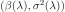
for a given
are:
(7)¶
(8)¶
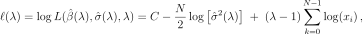
where  is a constant.
is a constant.
The parameter
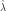
is the one maximising defined in (8).
defined in (8).
API:
See
BoxCoxTransformSee
BoxCoxFactory
Examples: